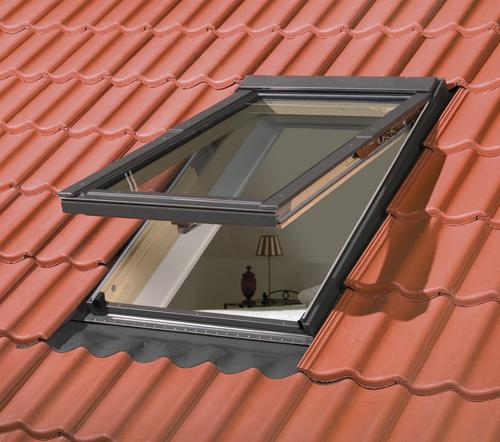
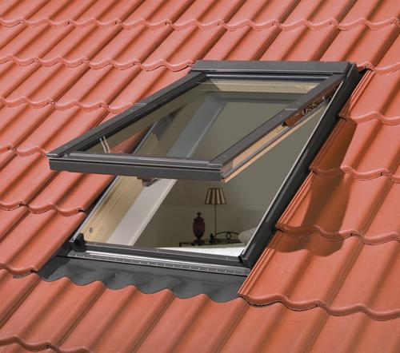

langas
2020.10.27 11:56
enacademic.com EN RU DE FR ES Remember this site Dictionary of the Lithuanian Language Interpretations Translations Books
Dictionary of the Lithuanian Language
langas
langas: translationlángas sm. (3) 1. SD 222, R , LsB 168 rėmai su stiklais, įtaisyti namo, susisiekimo priemonės ir kt. sienose šviesai įeiti; anga rėmams, patys rėmai ir stiklai rėmuose: Saulės atšvitulys į lángą tviska J . Trobos langai užburbėję, užšalę, net baltuoja iš lauko Žem . Viena po kitos gęsta lempos pirkių languose rš . Pasėk, mergele, rūteles po stiklo lángu Mrc . Tai bijojau tamsioj naktyj langẽlio praverti Dv . Iš vieno inspekto lango prikuliama 40–200 g žiedinių kopūstų sėklos rš . Seniau buvo kūloku kišami langeliai (labai maži) Ėr . Mano akys vis lange (vis žiūriu pro langą) rš . Aždaryk duris, mat langas pučia J.Jabl . Jos nerado … nei bevaikštinėjančios, nei duryse, nei langiep berodančios DP 440. Taip lyg jie karveliai lek savo langumpi Ns 1832,11-12. Pelėda leka į langus – būs nelaimė nume ( priet. ) Šts . Jei langai rasoja, bus lytaus Škn . Kambary tamsu, o už lango (lauke) saulė šviečia Mrj . Pradės šunes visi lotie, žmones par langaĩs dabotie ( d. ) Dglš . Auga ievaras laukuosna, o jo šakelės langúosna TŽ I254. Ko sėdi už stalelio, ko žiūri pro langelį? JD 1373. Kap jis joja per kiemelius, skamba, dreba langužėliai TŽ II269. O po stiklo langužaičiu matušė sėdėjo RD 38. Langučiai maži, nors iš šešių stiklų Vaižg . Aš paprašysiu savo broliukelį, kad man iškirstų svirne langiukẽlį Ad . ^ Nor per langą šok, kap buvo ma[n] (riestai buvo) Vrn . Ne tiek saulės, kai pro langą NžR . Ne tiek šviesos, kiek pro langą S.Dauk . Gražus kap pusė per lángą (negražus) Drsk . Mano langai dideli, tavim vienu neužkimšiu (vien tavęs man maža) B . Kad Dievas duos, tai ir pro langą įmes Ds . Jei Dievas duos – ir par lángą paduos! Šts . Pilve langelio nėra (ką suvalgai, tas ir gerai, niekas nepamatys) Bgs . Per kokį langą žiūri, taip ir matosi An . Rasi įspįs saulė ir į mūsų langą (gal ir mums kada laimė nusišypsos) M . Rytas – už nakties, smertis – už lango: dar gal visko matyti (yra daug laiko) Dr . Susirinko visi dūmai pri vieno lango (susikaupė bėdos) Šv . Nėr langų – ir akys perniek LTR . Šaudo Dievo langañ (pro šalį, nepataiko) Trgn . Rytą per lángą iššoko (sakoma apie nežinomą tėvą) Dkš . Kad jau Kastutė išeis (ištekės), tai mane per lángą ištrauks (mielai, varžydamiesi ims mane už žmoną) Mžš . Stuba langais išeit (tinklas pro aketes ištraukiamas) B . 2. kas nors panašus į langą, keturkampis: Bulves sėjom ne į vagas, bet į langus, ir dėl to auga pašūkėdamos Šts . Tie langai ir tos drabužių gėlės tamsiomis spalvomis suderinti Pt . ║ keturkampė skylė: Jei vartojami langiniai vokai, laiškai taip lankstomi, kad visas gavėjo adresas būtų matomas pro langą rš . Iš oro [šautuvo] uoksas turi langą įdėti šoviniams sp . Neužkalk visos sienos, palik lángą Jnš . 3. skylė, praraja liūne, akis: Šepetoj yra tokių langų, kad ir ilgiausias kartis į juos kiši, vis nugarmės – niekad dugno nepasieksi Kp . 4. prk. akis (gyvulio): Šitas arklys yra vienu lángu Rs . 5. metamo audeklo matas – tarpas tarp dviejų mestuvų stulpelių (ketvirtadalis sienos): Apmečiau dešims sienų be dviejų langų Mrs . Apsimečiau penkias sienas be lángo drobės Lp . Gali atlikti muštų siūlų – užleisk nor lángą Rdm . Kažin, mesiu tris lankus ir lángą – ar užteks? Al . Ar daug langų̃ išaudei? Lzd .
Dictionary of the Lithuanian Language .
langarykštė langatiesėLook at other dictionaries:
langas — statusas T sritis informatika apibrėžtis Kompiuterio ekrano sritis, kurioje pateikiamas dokumentas arba kita informacija (pranešimas, meniu ir pan.). Ekrane gali būti keli langai, vienas langas gali būti kitame lange. Dažniausiai langai būna … Enciklopedinis kompiuterijos žodynas
Långås — est un village en Halland, Suède. Le village a une population de 516 habitants (2005) y se situe en Morup paroisse. v · Localités de la Commune de Falkenberg Chef lieu (centralort) Falkenberg, divisé en douze … Wikipédia en Français
langas — lángas dkt. Dvi̇̀gubasis, nuleidžiamàsis, suveriamàsis lángas … Bendrinės lietuvių kalbos žodyno antraštynas
Långås — is a village north of Falkenberg in Halland County, Sweden, with 516 inhabitants (2005). The footballer Patric Andersson is from the village … Wikipedia
langas — statusas T sritis fizika atitikmenys: angl. window vok. Fenster, n rus. окно, n pranc. fenêtre, f … Fizikos terminų žodynas
Langas — Sp Lángas Ap Langå L Danija … Pasaulio vietovardžiai. Internetinė duomenų bazė
Langas Villas — (Имеровиглион,Греция) Категория отеля: Адрес: Imerovigli, Имеровиглион, 847 00, Греци … Каталог отелей
Langas Accueil Sympa — (Roz Landrieux,Франция) Категория отеля: Адрес: langas n° 64, 35120 Roz Landri … Каталог отелей
Holiday home Lunnagård, Långås Långås — (Långås,Швеция) Категория отеля: Адрес: 311 93 Långås, Швеция … Каталог отелей
iškylantysis langas — statusas T sritis informatika apibrėžtis ↑Grafinės sąsajos langas, atsirandantis priekiniame plane. Iškyla paspaudus pelės klavišą arba atlikus kitokį veiksmą, tačiau dažnai atsiranda savaime – atsiunčia kuri nors svetainė. Naudojami … Enciklopedinis kompiuterijos žodynas
© Academic, 2000-2020 Mark and share Search through all dictionaries Translate… Search InternetShare the article and excerpts
Direct link
… Do a right-click on the link aboveand select “Copy Link”
We are using cookies for the best presentation of our site. Continuing to use this site, you agree with this. OK
- Plastikiniai Langai Vilniuje | Kaune - Gera Kaina Internetu
- Knygu Langas
- Apie chorą | Choras Langas
- Langas į valdžią - LRT
- Langas PLASTIMET CLICK-ON MD - Milanga
- Langas į vaiko pasaulį - Knygos internetu www.mintis.eu
- IS langas - atverk, pažink, suprask! Informacija apie ...
- Langas sapne :: Sapnų reikšmės | Laimos sapnininkas
- langas - išsamiai DELFI.lt
- langas - Vikižodynas - Wiktionary
- Plastikiniai Langai Vilniuje | Kaune - Gera Kaina Internetu
Plastikinis šiltas langas iš KÖMMERLING 76 MD profilio – A+klasė. Šilumos laidumo koeficientas iki Uw=0.85-0.91 W/m2K.(naudojant termo rėmelį) Gaminamas iš vokiško 6 kamerų, 3 sandarinimo tarpinių, 76 mm pločio KÖMMERLING 76 MD plastikinio profilio .
- Knygu Langas
NOVATORIŠKAS LANGAS SU AUTORINE PVC LANGŲ PROFILIŲ SISTEMA IR MODULINE KONSTRUKCIJA RĖMAS 6 kamerų, 80 mm montavimo gylio profilis. PATOGU NAUDOTI dėl glotnaus bei atsparaus atmosferos veiksniams išorinio paviršiaus langus lengva valyti. Užapvalintas stiklajuostės kampas palengvina švaros palaikymą. DAUGIAU ŠVIESOS palyginus su kitais rinkoje esančiais...
- Apie chorą | Choras Langas
Nauju knygu elektronine parduotuve internete Knygu Langas. Ivairiausiu zanru knygos vaikams ir suaugusiems, grožinė literatūra, žodynai, dovanu knygos, enciklopedijos, pažintines.
- Langas į valdžią - LRT
Nieko nebijantys jaunieji Šiaulių medikai: bus karšta, bet mes viską atlaikysime medikams gelbsti grupės „The Roop“ šokis 1383
- Langas PLASTIMET CLICK-ON MD - Milanga
Mjanmų kalba: nurodykite žodžio langas vertimą(-us) (Mjanmų kalba), žr. Mongolų kalba: цонх (tsonh) Norvegų kalba: vindu Oksitanų kalba: fenèstra Nyderlandų kalba: raam , venster , ruit Šablonas:mhrv1 тӧрза (törza)
- Langas į vaiko pasaulį - Knygos internetu www.mintis.eu
“Langas” yra varstomas, lyg keičiant galimybių dvelksmą nuo “neįsivaizduojamo”, t.y. visiškai svetimo visuomenės dorovės principams, kurį visiškai atmeta “dabartinės politikos” etape, iki stadijos, kada jau plačiai diskutuojama, masinės sąmonės priimta ir įtvirtinta įstatymu.
- IS langas - atverk, pažink, suprask! Informacija apie ...
Langas - Uždarytas - drąsa pasieksi tikslą; iškristi pro jį - pavojus; Matyti sapne stogo langą - pasisekimas. Matyti nešvarius langus - sapnuojančio žmogaus gyvenimo būdo pavyzdys. Jei jie apšviesti saulės - sąžinės graužimas. Jeigu sapnuojate, kad langą liečiate pirštais, vadinasi, Jus kankins abejonės dėl mylimo žmogaus.
- Langas sapne :: Sapnų reikšmės | Laimos sapnininkas
Knygoje „Langas į vaiko pasaulį" pateikiama daug praktinių pavyzdžių, kaip galime pažvelgti į paslaptingą vaiko pasaulį, jį suprasti, padėti išgyventi krizes, įveikti sunkumus, paskatinti augimą. Tam svarbu nuoširdžiai domėtis vaiku, priimti jį tokį, koks yra, būti greta.
- langas - išsamiai DELFI.lt
sm. (3) 1. SD222, R, LsB168 rėmai su stiklais, įtaisyti namo, susisiekimo priemonės ir kt. sienose šviesai įeiti; anga rėmams, patys rėmai ir stiklai rėmuose: Saulės atšvitulys į langą tviska J. Trobos langai užburbėję, užšalę, net baltuoja iš…
- langas - Vikižodynas - Wiktionary
Chorą "Langas" 1990 metais subūrė vadovė Rita Kraucevičiūtė. Iki 1995 metų kolektyvas priklausė įvairioms meninėms struktūroms: Šiuolaikinio meno centrui, galerijai "Langas", Lietuvos dailininkų sąjungai. 1995 metais choras "Langas" buvo pakviestas į naujai pašventintą šv. Pranciškaus Asyžiečio ir šv.
Plastikinis šiltas langas iš KÖMMERLING 76 MD profilio – A+klasė. Šilumos laidumo koeficientas iki Uw=0.85-0.91 W/m2K.(naudojant termo rėmelį) Gaminamas iš vokiško 6 kamerų, 3 sandarinimo tarpinių, 76 mm pločio KÖMMERLING 76 MD plastikinio profilio .
NOVATORIŠKAS LANGAS SU AUTORINE PVC LANGŲ PROFILIŲ SISTEMA IR MODULINE KONSTRUKCIJA RĖMAS 6 kamerų, 80 mm montavimo gylio profilis. PATOGU NAUDOTI dėl glotnaus bei atsparaus atmosferos veiksniams išorinio paviršiaus langus lengva valyti. Užapvalintas stiklajuostės kampas palengvina švaros palaikymą. DAUGIAU ŠVIESOS palyginus su kitais rinkoje esančiais...
Nauju knygu elektronine parduotuve internete Knygu Langas. Ivairiausiu zanru knygos vaikams ir suaugusiems, grožinė literatūra, žodynai, dovanu knygos, enciklopedijos, pažintines.
Nieko nebijantys jaunieji Šiaulių medikai: bus karšta, bet mes viską atlaikysime medikams gelbsti grupės „The Roop“ šokis 1383
Mjanmų kalba: nurodykite žodžio langas vertimą(-us) (Mjanmų kalba), žr. Mongolų kalba: цонх (tsonh) Norvegų kalba: vindu Oksitanų kalba: fenèstra Nyderlandų kalba: raam , venster , ruit Šablonas:mhrv1 тӧрза (törza)
“Langas” yra varstomas, lyg keičiant galimybių dvelksmą nuo “neįsivaizduojamo”, t.y. visiškai svetimo visuomenės dorovės principams, kurį visiškai atmeta “dabartinės politikos” etape, iki stadijos, kada jau plačiai diskutuojama, masinės sąmonės priimta ir įtvirtinta įstatymu.
Langas - Uždarytas - drąsa pasieksi tikslą; iškristi pro jį - pavojus; Matyti sapne stogo langą - pasisekimas. Matyti nešvarius langus - sapnuojančio žmogaus gyvenimo būdo pavyzdys. Jei jie apšviesti saulės - sąžinės graužimas. Jeigu sapnuojate, kad langą liečiate pirštais, vadinasi, Jus kankins abejonės dėl mylimo žmogaus.
Knygoje „Langas į vaiko pasaulį" pateikiama daug praktinių pavyzdžių, kaip galime pažvelgti į paslaptingą vaiko pasaulį, jį suprasti, padėti išgyventi krizes, įveikti sunkumus, paskatinti augimą. Tam svarbu nuoširdžiai domėtis vaiku, priimti jį tokį, koks yra, būti greta.
sm. (3) 1. SD222, R, LsB168 rėmai su stiklais, įtaisyti namo, susisiekimo priemonės ir kt. sienose šviesai įeiti; anga rėmams, patys rėmai ir stiklai rėmuose: Saulės atšvitulys į langą tviska J. Trobos langai užburbėję, užšalę, net baltuoja iš…
Chorą "Langas" 1990 metais subūrė vadovė Rita Kraucevičiūtė. Iki 1995 metų kolektyvas priklausė įvairioms meninėms struktūroms: Šiuolaikinio meno centrui, galerijai "Langas", Lietuvos dailininkų sąjungai. 1995 metais choras "Langas" buvo pakviestas į naujai pašventintą šv. Pranciškaus Asyžiečio ir šv.
 
